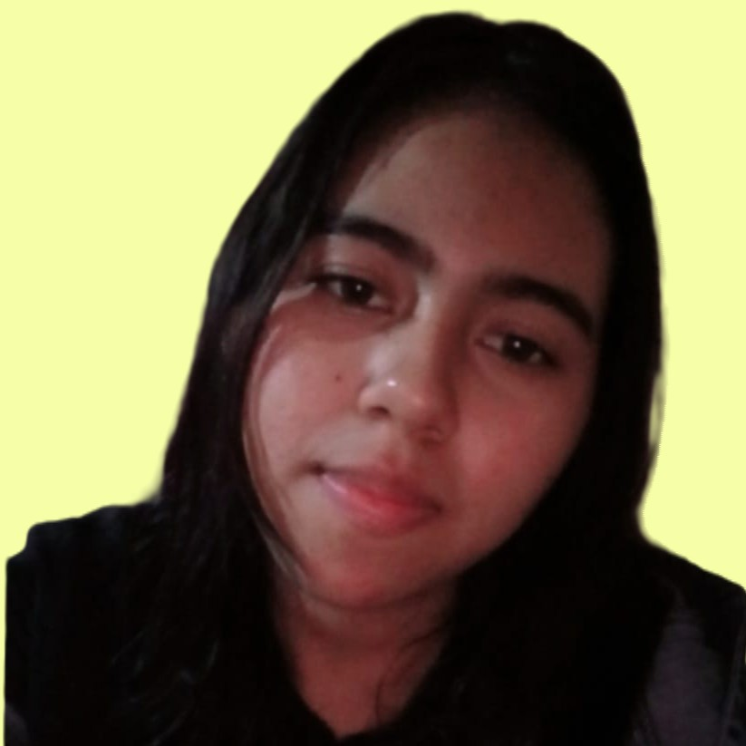
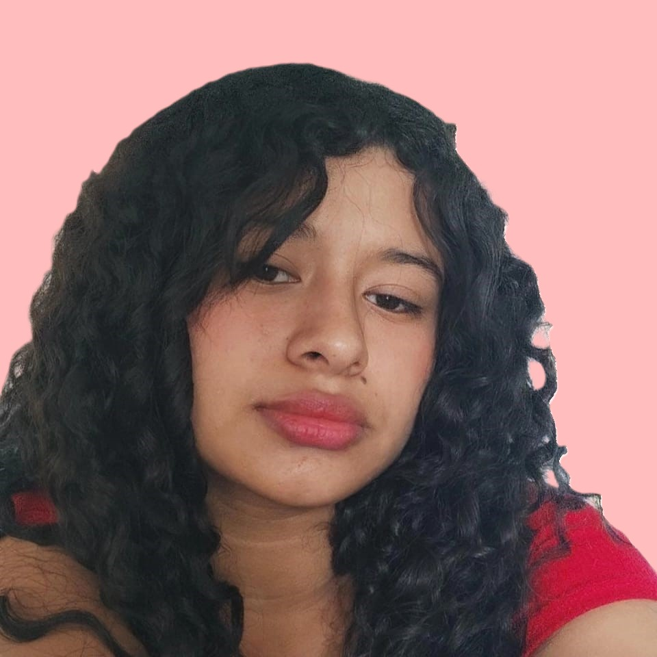
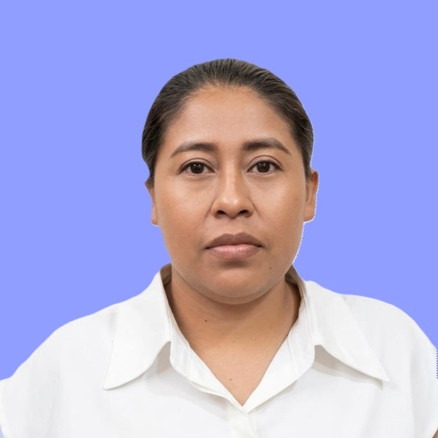
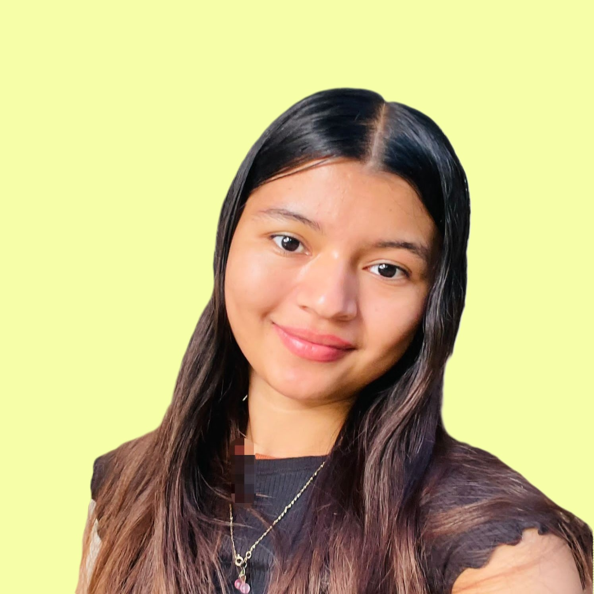
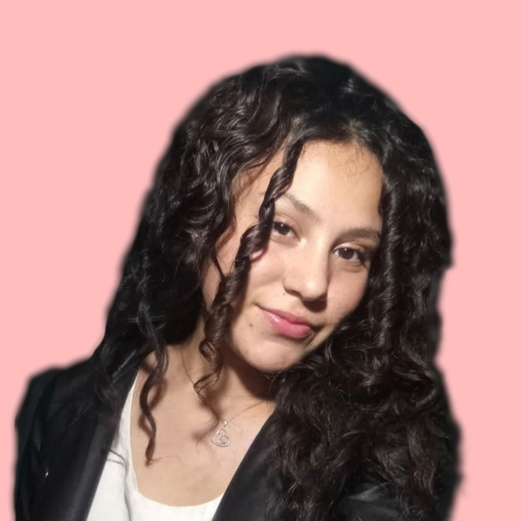

Somos estudiantes de la carrera Administración De Empresas en la Universidad Nacional Autónoma de Nicaragua (UNAN-León)
Centro Universitario Regional César Augusto Salinas Pinell (CUR-Somoto).

Gestión de Contenidos
Coordinadora de redacción y edición de las leyendas recuperadas.

Investigación de Campo
Especialista en recopilación de relatos orales y contacto comunitario.

Análisis de Diagnóstico
Responsable de procesar los datos para identificar brechas culturales.

Logística y Enlace
Encargada de la organización de las visitas y recursos del grupo.

Documentación Histórica
Encargada de contrastar los relatos con la historia de San Lucas.
Administrador Digital & Kobo
Líder técnico, responsable del desarrollo web y la implementación de KoboToolbox.